정보통신기사(구) (2010-05-09 기출문제)
1과목: 디지털 전자회로
1. 다음 중 차동 증폭기의 CMRR(Common Mode Rejection Ratio)에 대한 설명으로 거리가 먼 것은?
- 동상입력 이득에 대한 이상입력 이득의 비를 말한다.
- 이 값이 클수록 차동 증폭기의 성능이 좋다.
- 동상신호를 제거하는 척도이다.
- 회로의 안정도에서 이 값이 작을수록 유리하다.
(정답률: 70%)

2. 그림과 같은 디코더는 BCD 입력이 1001(ABCD)인 때만 출력이 1을 나타낸다고 할 경우, 다음 중 출력 Y를 불대수식으로 표현하면?
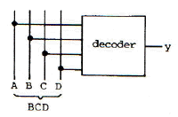
- A D
- A B
- A C
- B C D
(정답률: 82%)
3. 다음 회로에서 제너다이오드는 5.1[V]를 유지할 수 있도록 설계되었다. 제너 전류가 2.5[mA], 최대 35[mA]의 전류가 흘렀다고 하였을 때, 최소 및 최대 입력전압은? (단, 저항은 Rs=680[Ω]이다.)
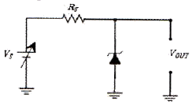
- 최소 : 6.6[V], 최대 : 28.9[V]
- 최소 : 6.6[V], 최대 : 30.2[V]
- 최소 : 6.8[V], 최대 : 28.9[V]
- 최소 : 6.8[V], 최대 : 30.2[V]
(정답률: 63%)
4. 다음 중 논리식 (A+B)(A+C)+AC를 간략화 하면?
- A+B
- A+BC
- A+B+C
- AB+AC
(정답률: 66%)
5. 다음 중 그림과 같은 다이오드 회로에서 입력이 Vi = 10√2 sin(100t)[V]일 때, 출력 전압(Vo)의 최고치는?
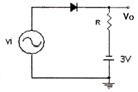
- 약 14.14[V]
- 약 10[V]
- 약 3[V]
- 약 -3[V]
(정답률: 63%)
6. 다음 중 반도체 집적회로내 구성소자와 가장 거리가 먼 것은?
- 저항
- 콘덴서
- 인덕터
- 다이오드
(정답률: 49%)
7. 다음 회로의 입력에 정현파가 인가될 경우, 이 회로의 설명으로 옳은 것은?
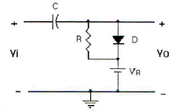
- 클램핑 회로이다.
- 출력신호의 하단레벨을 일정하게 유지한다.
- 반파정류회로이다.
- 클리핑 회로이며 출력신호의 크기를 제한한다.
(정답률: 52%)
8. 다음 중 다양한 논리 시스템을 설계할 수 있는 범용 논리 게이트(universal gate)에 해당하는 것은?
- AND 게이트
- OR 게이트
- NOR 게이트
- Exclusive OR 게이트
(정답률: 44%)
9. 다음 중 펄스의 상승 부분에서 발생하는 링잉(ringing)의 주원인은?
- 낮은 주파수 성분에서 공진하기 때문에
- 높은 주파수 성분에서 공진하기 때문에
- 출력 파형의 하강부가 감소하기 때문에
- 출력 파형의 상승부가 증가하기 때문에
(정답률: 74%)
10. 다음 중 평형변조 회로를 사용하는 주 목적은?
- 변조도를 크게 하기 위하여
- 직진성을 개선하고 변조 일그러짐을 없애기 위해서
- SSB파를 얻기 위해서
- 변조 전력을 줄이기 위해서
(정답률: 61%)
11. PLL(Phase Locked Loop) 회로의 구성 요소에 속하지 않는 것은?
- 위상 검출기
- 저역통과 필터
- 전압제어발진기(VCO)
- 비트주파수발진기(BFO)
(정답률: 47%)
12. 다음 중 JK Flip-flop에서 Jn=1, Kn=0일 때 클럭이 인가되면 Qn+1의 출력상태는?
- 부정
- 0
- 1
- 반전
(정답률: 68%)
13. 다음 중 프리엠퍼시스(pre-emphasis) 회로와 관련이 있는 것은?
- 저역통과필터
- 고역통과필터
- 대역통과필터
- 대역저지필터
(정답률: 54%)
14. 다음 중 회로에서 트랜지스터의 컬렉터-이미터 간 포화전압을 0[V]라 할 때, ① A=B=C=0인 경우와 ② A=B=C=5[V]인 경우의 출력(OUT)은?
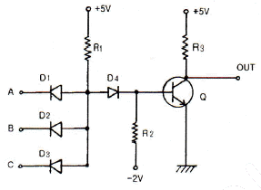
- ① 0[V], ② 0[V]
- ① 0[V], ② 5[V]
- ① 5[V], ② 0[V]
- ① 5[V], ② 5[V]
(정답률: 63%)
15. 그림과 같은 CR 회로에서 지수 함수적으로 증가하는 경우는?
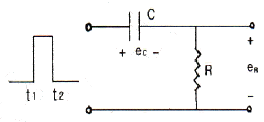
- t1~t2에서 ec
- t1~t2에서 eR
- t2에서 ec
- t2에서 (ec +eR)
(정답률: 64%)
16. 트랜지스터 B급 증폭회로에서 실효 부하저항이 RL이고 전원전압이 Vcc이면 최대출력(Pmax)은?
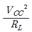
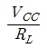
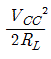
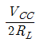
(정답률: 70%)
17. 그림과 같은 기본 발진회로에서 증폭기 A의 전압이득이 50일 때, 궤환율 β의 크기는?
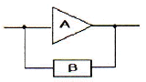
- 0.01
- 0.02
- 0.⑤
- 0.1
(정답률: 68%)
18. 교류를 직류로 변환하는 정류회로의 구성요소가 아닌 것은?
- 전원변압기
- 평활회로
- 정류기
- 발진기
(정답률: 66%)
19. LC 발진회로에서 발진주파수의 변동요인과 대책이 틀린 것은?
- 전원전압의 변동 : 직류안정화 바이어스 회로를 사용
- 부하의 변동 : Q가 낮은 수정편을 사용
- 온도의 변화 : 항온조를 사용
- 습도에 의한 영향 : 회로의 방습 조치
(정답률: 74%)
20. 드레인 전압이 30[V]인 JFET에서 게이트 전압을 0.5[V] 변화시켰더니 드레인 전류가 2[mA] 변화한 경우 FET의 상호컨덕턴스[m℧]는?
- 0.1
- 1
- 4
- 6
(정답률: 54%)
2과목: 정보통신 시스템
21. 다음 중 공중 패킷망 간의 상호접속용 프로토콜은?
- X.75
- X.30
- X.25
- X.21
(정답률: 50%)
22. 다음 중 대역확산 통신방식에 해당되지 않는 것은?
- Direct Sequence Spread Spectrum
- Frequency Hopping Spread Spectrum
- Time Hopping Spread Spectrum
- Frequency Multiplexing Spread Spectrum
(정답률: 61%)
23. 다음 중 광섬유의 광학적 파라미터가 아닌 것은?
- 비굴절율차
- 수광각
- 개구수
- 편심율
(정답률: 59%)
24. ISO의 OSI-7 계층 프로토콜 구조에서 종점간(end-to-end)에 신뢰성 있고 투명한 데이터 전송을 수행하는 계층은?
- 데이터링크 계층
- 물리 계층
- 트랜스포트 계층
- 네트워크 계층
(정답률: 75%)
25. 60000[bps]의 전송속도에서 64-QAM 신호의 변조속도[Baud]는?
- 10000
- 12000
- 14000
- 18000
(정답률: 67%)
26. 다음 중 에러 발생이 전송로의 우연적인 왜곡(동적인 불완전성)에 의한 원인이 아니고, 시스템적인 왜곡(정적인 불완전성)이 원인인 것은?
- 혼선
- 첪격성 잡음
- 선로 손실
- 선로의 일시고장
(정답률: 58%)
27. 광케이블 통신의 구성에 있어서 전광 변환기에 사용되는 반도체 레이저 또는 발광 다이오드가 설치되는 곳은?
- 수신측
- 수신측과 송신측
- 송신측
- 광케이블 중간
(정답률: 57%)
28. 광파장 분할 다중화 방식(Wavelength Division Multiplexing)에 관한 설명으로 거리가 먼 것은?
- 양방향전송이 가능하다.
- 누화의 영향을 받지 않는다.
- TV와 음성신호의 동시전송이 가능하다.
- PCM 방식에서만 가능하다.
(정답률: 69%)
29. 다음 중 10 Base5 Ethernet의 기본 규격에 해당하지 않는 것은?
- 최대거리는 125[km]이다.
- 데이터 전송속도는 10[Mbps]이다.
- 액세스방식은 CSMA/CD이다.
- 전송매체는 동축케이블을 사용한다.
(정답률: 71%)
30. 정보통신 교환망의 기능 정지를 막고 안정된 서비스를 제공하기 위한 신뢰성 향상 대책으로 가장 거리가 먼 것은?
- 교환 장치를 중앙에 집중화시킨다.
- 교환 장치의 신뢰성 향상을 위해 주요 부분을 이중화한다.
- 주요 전송경로를 이중화한다.
- 유지보수지원 시스템을 개발 운용한다.
(정답률: 63%)
31. 통신 서비스는 서비스 품질(QoS)에 의해 평가된다. 다음 중 서비스 품질에 해당되지 않는 것은?
- 패킷 에러율
- 처리량(전송속도)
- 패킷지연
- 전송방법
(정답률: 75%)
32. 다음 중 디지털 중계기의 3R 기능이 아닌 것은?
- Retiming
- Reshaping
- Regenerating
- Repeating
(정답률: 62%)
33. 샤논(Shannon)의 정리인 채널 통신용량(C)의 식을 바르게 표현한 것은? (단, B: 대역폭, S: 신호전력레벨, N: 잡음전력레벨)
- C = 2B log2 (1+S/N)
- C = B log2 (1+S/N)
- C = 2B log10 (1+S/N)
- C = B log10 (1+S/N)
(정답률: 68%)
34. ITU-T V시리즈 표준안 중 DTE/DCE 간에 EIA의 RS-232C 인터페이스 규격과 같은 것은?
- V.20
- V.24
- V.25
- V.31
(정답률: 40%)
35. 다음 중 인터넷 프로토콜에 대한 설명으로 틀린 것은?
- UDP는 연결형(connection-oriented) 프로토콜이다.
- TCP 및 UDP는 전달 계층에 해당된다.
- TCP 및 UDP는 IP 상위에서 동작한다.
- ICMP는 IP에서 발생하는 문제를 처리하기 위한 프로토콜이다.
(정답률: 62%)
36. 다음 중 비트(bit) 방식의 전송 프로토콜에 속하지 않는 것은?
- BSC
- SDLC
- HDLC
- LAP-B
(정답률: 50%)
37. 정보통신의 에러제어에서 ARQ에 해당되는 것은?
- 패리티검사 코드방식
- 에러검출 후 재전송방식
- 전진에러 수정방식
- 에코검사방식
(정답률: 66%)
38. 다음 중 정보의 캡슐화(encapsulation)에 사용되는 프로토콜 제어정보가 아닌 것은?
- 동기신호
- 수신주소
- 송신주소
- 오류검출코드
(정답률: 38%)
39. 다음 중 LAN에서 100 Base-FX에 관한 설명으로 적합하지 않은 것은?
- 광케이블을 이용해서 100[Mbps]의 Network를 구성한다.
- MAC에서 CSMA/CD 프로토콜을 사용한다.
- 100 Base-FX를 사용하려면 양쪽에 연결되는 장비들이 모두 100 Base-FX를 지원하여야 한다.
- 이용하는 커넥터는 RJ-45로 이용한다.
(정답률: 53%)
40. 70개의 노드를 모두 망형으로 연결하려면 최소로 필요한 회선수는?
- 780
- 1225
- 2415
- 3160
(정답률: 75%)
3과목: 정보통신 기기
41. 다음 중 데이터 전송을 위한 변복조에서 심벌간의 간섭, 다중경로 페이딩에 의한 왜곡이 수신되는 경우 이를 보상하기 위한 것은?
- 대역여파기
- 증폭기
- 등화기
- 채널디코더
(정답률: 67%)
42. 다음 중 마이크로파 통신의 중계방식이 아닌 것은?
- 헤테로다인중계방식
- 간접중계방식
- 직접중계방식
- 검파중계방식
(정답률: 49%)
43. 다음 중 광학문자 읽기장치(OCR)와 거리가 먼 것은?
- 주사 광전변환
- 랜덤스캔
- 문자판독기
- 특징 추출식별
(정답률: 52%)
44. 정보통신에서 압신기와 신장기의 설치에 대한 설명으로 옳은 것은?
- 모두 송단측에 설치한다.
- 모두 수단측에 설치한다.
- 압신기는 송단측에 신장기는 수단측에 설치한다.
- 압신기는 수단측에 신장기는 송단측에 설치한다.
(정답률: 76%)
45. 위성통신의 중계기로서 상위링크 신호를 수신하여 하위링크 주파수로 변환시켜 주는 것은?
- 트랜스폰더
- 텔레코멘드 장치
- 추미 장치
- 제어 인터페이스
(정답률: 72%)
46. 다음 중 위성통신 시스템에서 위성중계기의 신호 증폭부가 갖추어야 할 요건이 아닌 것은?
- 고신뢰성
- 고효율성
- 경량성
- 협대역성
(정답률: 68%)
47. 다음 중 디지털 전자교환기에 속하지 않는 것은?
- M10CN
- AXE-10
- TDM-1A
- TDX-10
(정답률: 54%)
48. 다음 중 DSU(Digital Service Unit)의 기능과 거리가 먼 것은?
- 신호 파형의 변환
- 신호 전송속도의 변환
- 제어 신호의 삽입
- 아날로그와 디지털 신호의 상호 변환
(정답률: 55%)
49. 고품위 텔레비전(HDTV) 방식에 대한 설명으로 틀린 것은?
- 주사선수는 NTSC 방식보다 높은 1125개이다.
- 화면의 세로:가로 비는 9:16이다.
- 주파수 대역폭은 현행 6[MHz]보다 높은 12[MHz]이다.
- 음성신호는 PCM 방식 등을 사용한다.
(정답률: 67%)
50. 음성파형을 분석하여 유무성음의 구별, 주기 및 성도의 형태 등 음성의 특징을 추출하여 전송하고 수신측에서는 전송된 정보를 가지고 음성을 합성해내는 방식은?
- 파형부호화 방식
- 보코딩 방식
- 혼합부호화 방식
- 원천부호화 방식
(정답률: 68%)
51. CATV의 구성요소 중 수신안테나에서 수신한 각 채널의 방송신호를 중간 주파수대로 변환하여 조정한 후, VHF대로 재변환하여 중계 전송망으로 송출하는 역할을 하는 것은?
- 헤드 엔드
- 중계 전송망
- 원격 조정기
- 가입자 설비
(정답률: 74%)
52. 다음 중 정지 및 이동환경에서 고속으로 인터넷을 접속하여 멀티미디어 콘텐츠를 이용할 수 있는 것은?
- DMB
- Wibro
- RFID
- GPS
(정답률: 62%)
53. 다음 중 ATM 교환기의 설명으로 적합하지 않은 것은?
- 고속 광대역통신에 적합하며 다양한 서비스 제공이 가능하다.
- 기존의 회선교환과 다르게 일정한 길이의 셀을 전송한다.
- 어떤 형태의 서비스라도 단일망으로 수용이 가능하고 셀을 45[byte]로 세분화하여 유연성을 갖게 한다.
- 비동기식 전달 모드로 패킷교환과 회선교환 방식의 장점을 살린 것이다.
(정답률: 59%)
54. 다중화장비와 집중화장비에 대한 설명으로 틀린 것은?
- 다중화장비는 정적인 채널을 공유하고, 집중화장비는 동적인 채널을 공유한다.
- 다중화장비는 입출력의 대역폭이 다르고, 집중화장비는 입출력의 대역폭이 같다.
- 집중화장비에서 입력 회선수는 출력 회선수보다 크거나 같다.
- 다중화장비는 주파수분할, 시분할방식 등이 있다.
(정답률: 52%)
55. 다음 중 비디오텍스에서 문자와 도형을 포함하는 모든 정보를 이미지로 취급하는 도트 패턴 데이터의 부호화 방식으로 사용하는 것은?
- 알파모자이크 방식
- 알파지오메트릭 방식
- 알팤뮤즈 방식
- 알파포토그래픽 방식
(정답률: 63%)
56. 다음 중 팩시밀리의 압축 부호화방식에 해당되지 않는 것은?
- MH 부호화
- MR 부호화
- MMR 부호화
- MMH 부호화
(정답률: 67%)
57. 다음 중 다중방송의 종류가 아닌 것은?
- CATV 다중방송
- 팩시밀리 다중방송
- 문자 다중방송
- 음성 다중방송
(정답률: 48%)
58. 정보통신시스템에서 사용되는 DTE/DCE 인터페이스용 RS-232C 25핀 중에서 5번 핀의 기능은?
- RTS(Request To Send)
- RXD(Receive Data)
- CTS(Clear To Send)
- CD(Carrier Detect)
(정답률: 52%)
59. 정보통신시스템의 구성요소 중에서 정보 전송계에 속하지 않는 것은?
- 단말장치
- 신호변환장치
- 보조기억장치
- 통신제어장치
(정답률: 61%)
60. 이동통신에서 짧은 페이딩에 의한 버스트오류 (burst error)가 발생되는데 중첩부호만으로는 만족할 수 없으므로, 이 경우 미리 정해진 방법으로 시퀀스의 순서를 재배열하여 전송하는 것은?
- Interference
- Interleaver
- Space diversity
- Sequence control
(정답률: 54%)
4과목: 정보전송 공학
61. 광섬유에 대한 설명으로 틀린 것은?
- 코어의 굴절률은 클래드의 굴절률보다 크다.
- 분산특성에는 색분산과 형태분산이 있다.
- 광섬유에 입사된 빛은 코어의 내부에서 전반사하면서 통과한다.
- 광섬유에서 다중모드의 전송속도가 단일모드 보다 빠르다.
(정답률: 57%)
62. 디지털 변조방식에서 오류확률이 가장 낮은 것은?
- 2진 ASK
- 2진 FSK
- 2진 PSK
- 2진 DPSK
(정답률: 49%)
63. QAM에 대한 설명 중 적합하지 않은 것은?
- 정보 신호에 따라 반송파의 진폭과 위상을 동시에 변화시킨다.
- QAM 신호는 두개의 직교성 DSB-SC 신호를 선형적으로 합성한 것이다.
- 동기검파를 사용하여 신호를 검출할 수 있다.
- 동일한 신호레벨에서 PSK와 오류확률은 같다.
(정답률: 69%)
64. HDLC 전송제어에서 사용하는 동작 모드가 아닌 것은?
- 정규응답모드(NRM)
- 초기 모드(IM)
- 비동기 평형모드(ABM)
- 비동기 응답모드(ARM)
(정답률: 75%)
65. 전송 에러 발생의 주요 요인에 속하지 않는 것은?
- 잡음
- 감쇠 왜곡
- 선형 왜곡
- 지연 왜곡
(정답률: 71%)
66. 마이크로파 통신의 특징에 대한 설명으로 적합하지 않은 것은?
- 광대역 전송이 가능하다.
- 산악 등 지형장애물의 영향이 적다.
- 지향성이 예민하여 통신망 형성이 용이하다.
- 소형의 고이득의 안테나를 사용할 수 있다.
(정답률: 70%)
67. 10초 동안 1000000개의 비트가 전송되고, 이 비트 중 2개가 오류로 판명되었을 때 이 전송의 비트 에러율은?
- 1×10-5
- 2×10-5
- 1×10-6
- 2×10-6
(정답률: 71%)
68. 정합필터에 대한 설명 중 적합하지 않은 것은?
- 디지털 통신에서 사용된다.
- 비동기 검파기로 동작한다.
- 정합필터의 출력은 입력신호의 에너지와 같다.
- 펄스의 존재 유무를 판변하는 시점에서 신호성분을 증가시키고 잡음성분을 감소시키는 역할을 수행한다.
(정답률: 51%)
69. FDM 다중통신과 비교하여 PCM 다중통신의 특징으로 적합하지 않은 것은?
- 지터 잡음이 생긴다.
- 점유 주파수 대역폭이 넓다.
- 고가의 여파기가 필요하고 장치가 크다.
- 전송로의 잡음이나 누화 등의 영향이 적다.
(정답률: 46%)
70. ARQ 방식의 일종으로 NAK를 수신하게 되면 착오가 발생한 데이터 프레임만을 재전송하는 방식은?
- Go Back N ARQ
- 선택적 재전송 ARQ
- Stop and Wait ARQ
- 적응적 ARQ
(정답률: 74%)
71. "프로토콜이 메시지의 첫 4바이트는 송신자의 주소가 차지해야 한다"라고 기술되어 있을 때 이것과 관련된 것은?
- 구문(Syntax)
- 의미(Semantics)
- 타이밍(Timing)
- 메시지(Message)
(정답률: 74%)
72. ADM에 대한 설명으로 틀린 것은?
- 적응형 양자화를 수행한다.
- DM보다 양자화잡음 및 과부하잡음이 경감된다.
- 1비트 양자화를 수행한다.
- 양자화계단의 크기가 고정되어 있다.
(정답률: 66%)
73. 전송매체의 대역폭이 12000[Hz]이고, 두 반송파 주파수 사이의 간격이 최소한 2000[Hz]가 되어야 할 때 2진 FSK 신호의 보오율[baud]과 비트율[bps]은? (단, 전송은 전이중방식으로 이루어지며 대역폭은 각 방향에 동일하게 할당된다.)
- 4000[baud], 4000[bps]
- 4000[baud], 8000[bps]
- 10000[baud], 10000[bps]
- 10000[baud], 16000[bps]
(정답률: 54%)
74. HDLC 전송 프로토콜의 국 사이에서 교환되는 데이터 전송 단위는?
- 블록
- 프레임
- 비트
- 패킷
(정답률: 66%)
75. 시분할 다중화 통신방식에서 심볼간 보호시간(Guard time)을 두는 주된 이유는?
- 혼신 방지
- 전송 용이
- 변조 용이
- 복조 용이
(정답률: 79%)
76. 동기식과 비동기식 전송방식에 대한 설명으로 옳은 것은?
- 비동기식 전송방식은 오버헤드가 프레임당 고정적이다.
- 비동기식 전송방식이 동기전송방식 대비 전송효율 면에서 효율적이다.
- 비동기식 전송방식은 프레임 단위로 전송된다.
- 비동기식 전송방식에서는 속도가 높아질수록 타이밍 오류가 커지기 때문에 비교적 저속(300 ~ 19200[bps])의 데이터 전송에 주로 이용된다.
(정답률: 60%)
77. 엘리어싱(aliasing)에 대한 설명으로 적합하지 않은 것은?
- spectrum folding이라고도 한다.
- 엘리어싱이 발생하면 원래의 신호를 정확히 재생할 수 없다.
- 나이퀴스트 표본화 주파수보다 높은 주파수로 표본화하면 엘리어싱 효과를 줄일 수 있다.
- 표본화 전에 고역필터를 사용하면 엘리어싱 효과를 줄일 수 있다.
(정답률: 49%)
78. 다음 중 디지털 데이터를 아날로그 신호로 변조하는 방식이 아닌 것은?
- ASK
- QAM
- PCM
- DPSK
(정답률: 68%)
79. HDLC 프로토콜에 대한 설명으로 틀린 것은?
- 비트 방식 프로토콜이다.
- 동기식 전송방식을 사용한다.
- 에러 제어 방식으로 stop and wait ARQ를 사용한다.
- 점대점 불균형 링크, 멀티포인트 불균형 링크, 점대점 균형 링크에서 사용할 수 있다.
(정답률: 46%)
80. 16 PSK 방식은 BPSK 방식에 비해 정보전송 속도가 몇 배인가?
- 2
- 4
- 8
- 16
(정답률: 69%)
5과목: 전자계산기일반 및 정보통신설비기준
81. 다음 명령어와 관계있는 것은?
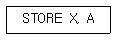
- 0-주소 명령어
- 1-주소 명령어
- 2-주소 명령어
- 3-주소 명령어
(정답률: 63%)
82. 운영체제 분류상 처리 프로그램에 해당되지 않는 것은?
- 파일관리 프로그램
- 언어번역 프로그램
- 응용 프로그램
- 서비스 프로그램
(정답률: 47%)
83. (-9)10를 부호화된 2의 보수(signed 2's complement)로 표시한 것은?
- 10001001
- 11001001
- 11110111
- 11110110
(정답률: 60%)
84. 컴퓨터의 운영체제에서 로더(loader)란 실행 프로그램 혹은 데이터를 주기억 장치내의 일정한 번지에 저장하는 작업을 말하는 것으로, 다음 중 로더의 주요 기능이 아닌 것은?
- 프로그램과 프로그램 간의 연결(linking)을 수행한다.
- 출력 데이터에 대해 일시 저장(spooling) 기능을 수행한다.
- 프로그램이 실행될 수 있도록 번지수를 재배치(relocation)한다.
- 프로그램 또는 데이터가 저장될 번지수를 계산하고 할당(allocation)한다.
(정답률: 66%)
85. 플래그 레지스터 중 8(16)비트 연산에서 하위 4(8)비트로부터 상위 4비트로 자리올림 또는 빌림이 발생한 경우 1로 리셋되는 것은?
- PF(parity flag)
- ZF(zero flag)
- AF(auxiliary carry flag)
- SF(sign flag)
(정답률: 58%)
86. 순차적으로만 사용할 수 있는 공유 자원이나 공유 자원그룹을 할당하는데 사용되는 데이터 및 프로시저를 포함하는 병행성 구조(concurrent construct)는?
- 채널
- 세마포어
- 버퍼
- 모니터
(정답률: 55%)
87. 프로그램을 작성할 때 프로그램의 내용과 과정을 이해하기 위하여 삽입하는 것으로 기계어로 번역되지 않는 부분은?
- 변수
- 함수
- 예약어
- 주석문
(정답률: 69%)
88. 마이크로 오퍼레이션 중 가장 긴 것의 시간을해당 마이크로 사이클 타임으로 정의하는 방식은?
- fetch status
- 동기 고정식
- 동기 가변식
- interrupt status
(정답률: 57%)
89. 기계어에 대한 설명으로 틀린 것은?
- 숙달된 사용자가 아니면 프로그램하기기 어렵다.
- 명령이나 수식에 연산하기 쉬운 기호를 사용하므로 기호언어라고도 한다.
- 기종마다 서로 다른 고유의 명령코드를 사용한다.
- 프로그램의 추가, 변경, 수정이 불편하다.
(정답률: 60%)
90. 부동소수점 표현시 수들 사이의 곱셈 알고리즘 과정에 포함되지 않는 것은?
- 0(zero)인지 여부를 조사한다.
- 가수의 위치를 조정한다.
- 가수를 곱한다.
- 결과를 정규화한다.
(정답률: 81%)
91. 다음 ( ) 안에 들어갈 내용으로 가장 적합한 것은?
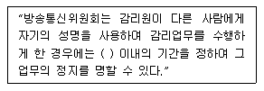
- 6월
- 1년
- 2년
- 3년
(정답률: 69%)
92. 전기통신의 표준화에 관한 업무를 효율적으로 추진하기 위하여 설립한 것은?
- 한국정보통신협회
- 한국정보화진흥원
- 한국정보통신기술협회
- 한국정보통신공사협회
(정답률: 70%)
93. 자가전기통신설비를 설치하고자 하는 자는 어떤 절차를 거쳐야 하는가?
- 방송통신위원회의 허가를 받아야 한다.
- 방송통신위원회에 신고하여야 한다.
- 방송통신위원회의 승인을 받아야 한다.
- 방송통신위원회에 등록을 하면 된다.
(정답률: 56%)
94. 전송설비공사의 하자담보책임 기간은?
- 1년
- 3년
- 5년
- 7년
(정답률: 67%)
95. 기간통신사업자가 전기통신설비의 설치 등을 위하여 타인의 토지를 일시 사용하고자 하는 경우에 그 사용기간은 얼마를 초과할 수 없는가?
- 1월
- 3월
- 6월
- 1년
(정답률: 67%)
96. 정보통신공사업자가 아니라도 시공할 수 있는 것은?
- 통신선로설비공사
- 교환설비공사
- 정보매체설비공사
- 아마추어국 무선설비설치공사
(정답률: 76%)
97. 정보통신공사업의 등록기준에 속하지 않는 것은?
- 자본금
- 사무실
- 공사실적
- 기술능력
(정답률: 65%)
98. 다음 ( ) 안에 들어갈 내용으로 가장 적합한 것은?
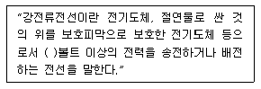
- 110
- 220
- 300
- 600
(정답률: 69%)
99. 다음 ( ) 안에 들어갈 내용으로 가장 적합한 것은?
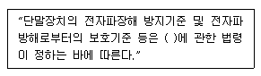
- 전파
- 전기통신
- 정보통신
- 전기통신설비
(정답률: 57%)
100. 전기통신사업의 경영 주체는?
- 국무총리
- 방송통신위원회
- 지식경제부장관
- 전기통신사업자
(정답률: 52%)